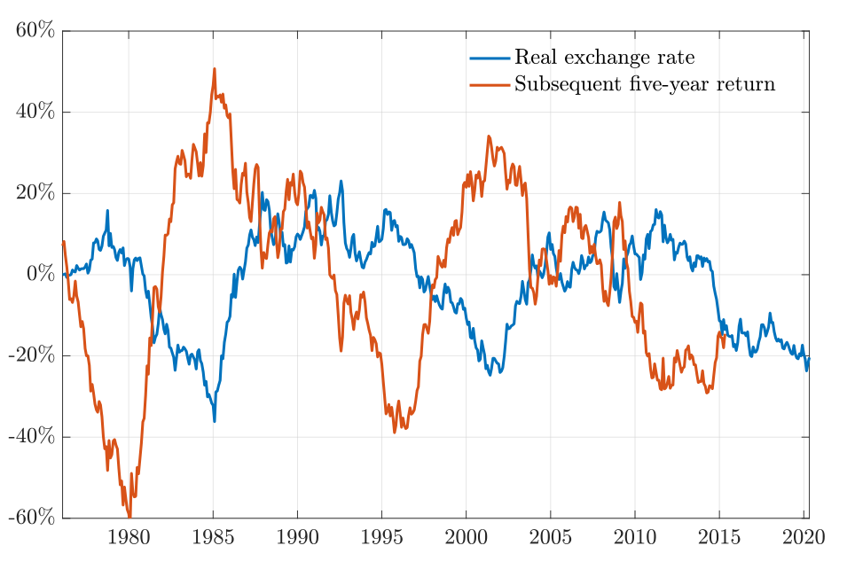
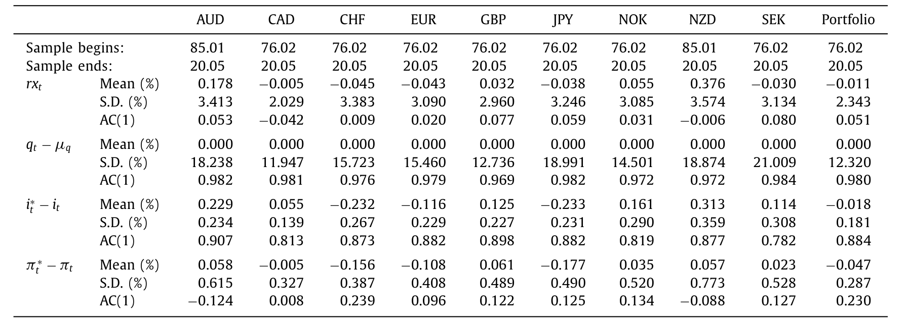
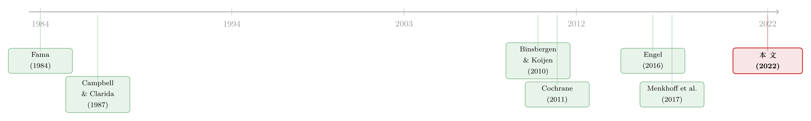

汇率里那块「找不到」的风险溢价
本文读的是 Dahlquist & Pénasse (2022, Journal of Financial Economics)：他们把研究股票的「现值模型」搬到汇率上，发现货币风险溢价并不只由利率差决定，还藏着一个看不见的潜在成分——「缺失的风险溢价」。更关键的是，真正主导实际汇率波动、并让「高利率货币长期反而更安全」这个怪现象成立的，恰恰是这块看不见的溢价，而不是利率差本身。
1 一个让人别扭的「几乎」
先从一个几乎所有学过国际金融的人都背得出的事实说起。
未抛补利率平价 (uncovered interest rate parity, UIP) 说：如果一国利率比美国高，它的货币就该在未来贬值，贬掉的幅度恰好抵消掉那点利息优势，于是借美元、投高息货币，平均下来不赚不赔。这是教科书里的「应该」。
可数据里的「实际」正好拧着来。Fama (1984) 早就发现，高利率的货币不但不贬，反而倾向于升值。于是借低息、投高息——所谓套息交易 (carry trade)——平均能赚钱。这就是著名的远期升水之谜 (forward premium puzzle)。
那这笔钱算什么？最自然的解释是：它是一种风险溢价。高利率货币之所以给你额外回报，是因为它更危险，你拿的是风险补偿。Fama 自己也指出，在理性预期下，他那个回归可以翻译成一个关于货币风险溢价 (currency risk premium) 的表达式。顺着这条路走下去，文献里有一个非常流行、也非常省事的做法：干脆假设货币风险溢价就完全由利率差 (interest rate differential) 决定（Backus et al., 2001；Verdelhan, 2010；Farhi & Gabaix, 2016 都这么设）。
听上去顺理成章。但本文两位作者敏锐地注意到：如果真是这样，会推出一个在数据里站不住脚的结论。
接着，一个自然的问题是：那实际汇率又该长什么样？
2 借来的望远镜：把汇率当成「股价-股息比」
要回答这个问题，作者借了一台股票研究者用了几十年的望远镜——现值模型 (present-value model)。
这套思路在股票里太熟悉了：当不存在泡沫时，股价-股息比 (price-dividend ratio) 等于「未来所有预期股息增长之和」减去「未来所有预期折现率（即预期回报）之和」。Cochrane (2011) 那篇著名的主席演讲把它讲到了极致：估值比率的高低，几乎全是折现率在动，而不是现金流（关于这一点，可参见《贴现率：资产定价的中心议题》）。
汇率里有没有对应物？有。只要购买力平价 (purchasing power parity, PPP) 长期成立，实际汇率 (real exchange rate) \(q_t\) 就扮演着和股价-股息比一模一样的角色。沿着 Campbell & Clarida (1987)、Engel & West (2005, 2010) 的路子把当期回报的恒等式不断向前迭代、取条件期望，就得到：
$$q_t - \omega_t = \sum_{j=1}^{\infty} E_t\!\left(i_{t+j-1}^* - i_{t+j-1}\right) - \sum_{j=1}^{\infty} E_t\!\left(\pi_{t+j}^* - \pi_{t+j}\right) - \sum_{j=1}^{\infty} E_t\!\left(rx_{t+j}\right)$$
其中 \(\omega_t = \lim_{j\to\infty} E_t(q_{t+j})\) 是「预期的长期汇率」。这个式子读起来就是：实际汇率（相对其长期水平）= 未来实际利率差之和（类比股票的「现金流」）−未来货币回报之和（类比「折现率」）。
于是结论也和股票一模一样：实际汇率应当能预测未来的货币回报。价高者，后必低。Menkhoff et al. (2017) 正是用这个逻辑，论证了实际汇率可以当作横截面上的「价值」信号；本文则把同样的逻辑用在了时间序列上。
它有多像？作者画了一张几乎是 Cochrane 那张图的汇率版：把一篮子货币以美元计的对数实际价格（蓝线）和它随后五年的回报（红线）叠在一起。1985 年美元一路升值后，外币显得格外便宜，紧接着投资外币的回报就格外高——这个「高价之后是低回报」的模式一遍遍重复。

Figure 1: Real exchange rates and subsequent five-year currency returns
3 别扭的根源：那个「几乎完美」的相关性
现在把第 1 节的别扭和第 2 节的望远镜对上。
如果货币风险溢价真的只由利率差决定，那么上面那个现值公式里，未来的「现金流」（利率差）和未来的「折现率」（风险溢价）就都被同一个变量——利率差——牵着走。两边都是利率差的函数，实际汇率自然也就几乎只和当前利率差挂钩。换句话说，我们应当观察到实际汇率与利率差之间近乎完美的相关。
可数据里这个相关性弱得可怜，而且常常自相矛盾：利率差上升，一方面预示更高的未来回报（该让人想多持有），另一方面又往往伴随更高的当期汇率（按「价高后低」又该让人少持有）。两个信号打架。
但真正关键的一步在于作者怎么收场：他们指出，利率差的持续性其实不高，它对实际汇率的影响只是「温和」的；实际汇率绝大部分的起伏，是被另一个更持久、却没被写进模型的东西推动的。给它起个名字——「缺失的风险溢价 (missing risk premium)」。一旦把它放进来，那两个打架的信号就和解了。
4 模型：把「缺失的那一块」显式写出来
这是全文的骨架，值得一步步看清楚。
第一步，回报的定义。 借美元、投外币，对数超额回报就是外币升值率加利率差：
$$rx_{t+1} = s_{t+1} - s_t + i_t^* - i_t$$
把它用实际汇率和实际利率差重写：
$$rx_{t+1} = q_{t+1} - q_t + \left(i_t^* - \pi_{t+1}^*\right) - \left(i_t - \pi_{t+1}\right)$$
其中 \(q_t = s_t + p_t^* - p_t\) 就是对数实际汇率。
第二步，Fama 回归与它的「理性预期翻译」。 把未来升值率回归在当前利率差上：
$$rx_{t+1} = \alpha + (1-\beta)\left(i_t^* - i_t\right) + \varepsilon_{t+1}$$
UIP 要求 \(\beta = 1\)；数据里 \(\beta\) 通常小于 1、甚至为负（见 Engel, 2014 的综述）。在 Fama 的设定下，若误差项与当期信息正交，利率差就足以「钉死」风险溢价。本文恰恰要松开这个束缚。
第三步——也是真正的创新——给货币风险溢价一个更富有的形式：
$$E_t(rx_{t+1}) = \alpha + (1-\beta)\left(i_t^* - i_t\right) + \gamma y_t + \eta_t$$
这里 \(y_t\) 是一个可观测的额外预测变量（后面会讨论候选），\(\eta_t\) 就是那块潜在的、缺失的风险溢价。三者之间允许彼此相关。这种「把预期回报当潜变量」的做法，直接师承 Binsbergen & Koijen (2010)——他们就是把预期股票回报当成现值模型里的隐变量来过滤的。
第四步，给各变量上动力学。 名义利率差走 AR(1)，通胀差不持续；额外预测变量和缺失溢价各走一个零均值 AR(1)：
$$i_{t+1}^* - i_{t+1} = (1-\rho_i)\mu_i + \rho_i\left(i_t^* - i_t\right) + \varepsilon_{t+1}^i$$
$$\eta_{t+1} = \rho_\eta\,\eta_t + \varepsilon_{t+1}^\eta$$
再加上 PPP 长期成立（\(\omega_t = \mu_\omega\) 为常数）。在基准模型里先把额外预测变量关掉（\(\gamma=0\)），只留利率差和缺失溢价两块。
于是反转出现。 把这些假设代回现值公式，实际汇率坍缩成一个极其干净的两项结构：
这一步妙在哪？比较它和原始现值公式 (Eq 3)：本来实际汇率应当和「未来无穷期利率差与回报之和」纠缠在一起，可一旦未来的利率差和回报都正比于当期利率差，整条无穷和就被压缩成一个利率差项，外加一个缺失溢价项。两变量结构就此成形——而且它立刻告诉你：缺失溢价 \(\eta_t\) 不只是风险溢价的一部分，它还直接决定了实际汇率的水平。
这也意味着，传统的 Fama 预测回归其实漏掉了一个变量。把模型整理成可估计的预测式：
$$rx_{t+1} = \beta\mu_i\frac{\rho_\eta-\rho_i}{1-\rho_i} - \mu_\pi + (1-\beta)\frac{\rho_\eta-\rho_i}{1-\rho_i}\left(i_t^* - i_t\right) + (\rho_\eta-1)\left(q_t - \mu_\omega\right) + \varepsilon_{t+1}^{rx}$$
注意那个 \((q_t - \mu_\omega)\) 项：系数是 \((\rho_\eta - 1) < 0\)，正是「高汇率预示低回报」的价值效应；而它，恰恰是只回归利率差的单变量 Fama 回归所遗漏的。忽略它，\(\beta\) 的估计就会有偏。本文的一句话总结因此是：货币回报的预测，既要看利率差，也要看实际汇率。
5 识别：怎么把一个看不见的东西「滤」出来
\(\eta_t\) 是潜变量，看不见，怎么估？
这正是状态空间模型 (state-space model) 加卡尔曼滤波 (Kalman filter) 的用武之地。作者把上面的动力学写成「状态方程 + 观测方程」：状态是利率差和缺失溢价（必要时再加预期长期汇率），观测是实际汇率和利率差。模型对 \(\eta_t\) 施加了很紧的结构约束——它不是随便一个能拟合数据的残差，而是必须同时满足现值恒等式、必须以 AR(1) 演化、必须和利率差按特定方式组合出实际汇率。在这些约束下，用极大似然把 \(\eta_t\) 的整条路径过滤出来。
这一点回应了一个天然的顾虑：把看不见的东西命名为「缺失溢价」，会不会沦为「想要什么就拟合出什么」？答案是：现值模型把它的自由度卡得很死，它的持续性、它与利率差的相关、它对实际汇率的贡献，都不是自由参数，而是被恒等式联立约束出来的。
6 数据
作者用的是 Barclays Bank International 与 Reuters（经 Datastream）的月度即期与一月期远期汇率，区间从 1976 年 1 月 到 2020 年 5 月。币种为 G10：澳元、加元、欧元（1999 年前用德国马克拼接）、日元、挪威克朗、新西兰元、瑞典克朗、瑞士法郎、英镑，美元为本币，所有汇率以「每单位外币折合多少美元」表示。
其中加元、欧元、日元、挪威克朗、瑞典克朗、瑞士法郎、英镑从 1976 年起有数据；澳元和新西兰元从 1985 年 起。为构造等权组合，作者取这七个全程有覆盖的货币，等权平均，称之为「组合 (portfolio)」。利率差则用抛补利率平价 (covered interest rate parity, CIP) 反推：\(i_t^* - i_t = s_t - f_t\)。
下面这张表给出几个关键变量的描述性统计——超额回报、利率差、去均值后的实际汇率与通胀差的均值、标准差和一阶自相关。值得盯住的是各变量的持续性对比：这正是后面整篇文章的关节。

Table 1
7 主要结果：谁在驱动汇率？
把模型估出来，三个结论一以贯之。
第一，主角是缺失溢价，不是利率差。 作者发现，缺失的风险溢价、而非利率差，解释了实际汇率与货币回报的绝大部分变动。其直接推论是：缺失溢价与实际汇率高度相关——这与第 2 节「实际汇率应当能预测货币回报」的判断完美自洽。利率差当然有贡献，但它不持久，只能影响实际汇率里一小块、且偏短期的部分。
第二，缺失溢价比利率差更持久。 这是整个机制的发动机。利率差不像股息增长率那样转瞬即逝（它其实相当持久、用一个简单 AR(1) 就拟合得不错），但缺失溢价更持久。于是随着预测期拉长，实际汇率（相对利率差）越来越重要——这与股票里「股价-股息比之于长期回报」的地位惊人地相似。一句话：高度持久的风险溢价，既能解释实际汇率，也能解释股价-股息比。
第三，它解开了「预测力反转」之谜。 Bacchetta & Van Wincoop (2010) 和 Engel (2016) 都注意到一个怪现象：货币风险溢价与利率差的正相关，会随着期限反转——高利率货币在长期里反而显得更「安全」。本文的解释很漂亮：利率差和缺失溢价对回报的作用方向相反。一个正的利率差冲击会抬高未来回报，但它同时立刻推高了缺失溢价；短期内净效应是风险溢价上升（货币显得更险），可由于缺失溢价更持久，长期里反而压低了风险溢价（货币显得更安全）。短险长安，于是反转。
作者还做了若干稳健性：加入波动率、方差风险溢价 (Londono & Zhou, 2017)、外部失衡 (Gourinchas & Rey, 2007；Della Corte et al., 2012) 等额外预测变量 \(y_t\)，结论不变——因为这些变量都不如实际汇率持久，只能照亮中短期；允许通胀差持续、实际利率走不可观测过程 (Schorfheide et al., 2018)，结论不变；甚至放松 PPP、让预期长期汇率随宏观基本面（生产率、出口质量、净外资头寸）变动，结论也只是定性不变，长期汇率的变动只解释了实际汇率里很小的一部分。
8 文献脉络
把这条线索捋一遍，会看到一场漂亮的「跨市场移植」。
源头是 Fama (1984)：远期升水之谜，以及「货币风险溢价绑定利率差」的解读。紧接着 Campbell & Clarida (1987) 第一次把现值思路用在实际汇率上，Engel & West (2005, 2010) 进一步厘清汇率与基本面的关系。与此并行，股票这边 Binsbergen & Koijen (2010) 把预期回报当潜变量来过滤，Cochrane (2011) 则把「折现率才是主角」喊成了口号。然后，Engel (2016) 摆出了那个让人挠头的「预测力反转」，Menkhoff et al. (2017) 用现值逻辑把实际汇率立为横截面的「价值」信号。本文站在这两条河流的交汇处：把股票的潜变量现值方法，搬来解释汇率的时间序列，并用「缺失溢价」一举收编了反转之谜。

它与近年的几支并行研究也值得对读：把货币风险溢价拆进信用市场（参见《汇率藏在一张「违约保单」的价差里》）、用贸易网络位置解释货币回报（参见《你的货币贵不贵，要看你在贸易网络里坐第几排》）、以及把美元强弱拆回供需（参见《美元为什么强？》）。它们都在问同一个问题：那块超额回报，到底是谁、因何而付。
9 评论与延伸（Q&A + 研究方向）
(a) 几个可能的疑问
Q：「缺失溢价」和「利率差」既然都进风险溢价，为什么不能合并成一个变量？
因为它们的持续性不同、且彼此只是「不完全相关」。利率差不太持久，缺失溢价很持久；正是这个持续性差异，让二者在实际汇率里的权重、在不同期限上的作用截然不同。合并会抹掉本文最核心的机制——短险长安的反转，恰恰来自二者方向相反又衰减速度不同。
Q：把 \(\eta_t\) 当潜变量，会不会「想测出什么就测出什么」？
现值模型把它的自由度卡得很死。\(\eta_t\) 必须同时满足现值恒等式、按 AR(1) 演化、并与利率差按既定系数组合出实际汇率；它的持续性和相关结构是被联立约束逼出来的，不是自由拟合的残差。卡尔曼滤波在这些约束下做极大似然，识别来自结构而非数据挖掘。
Q：现值模型要求 PPP 长期成立、实际汇率平稳；可实际汇率出了名地「像」非平稳，结论还靠谱吗？
这是最该担心的地方，作者也正面处理了。一种看法是 PPP 确实成立，只是准永久性冲击让实际汇率在短样本里显得非平稳；另一种是干脆放松、让预期长期汇率时变。两条路都试了，结论定性不变，且时变的长期汇率只解释了实际汇率的一小部分。但「平稳 vs 非平稳」在统计上极难区分，这仍是结论的命门。
Q：这和 Menkhoff et al. (2017) 的「货币价值」到底差在哪？
Menkhoff 等人用实际汇率做横截面的价值信号；本文把同一套现值逻辑用在时间序列上，并且更进一步——不满足于「实际汇率能预测」，而是把实际汇率本身拆成利率差与缺失溢价两块，回答「是什么在驱动实际汇率」。
Q：「短期更险、长期更安全」这个反转，直觉上怎么理解？
想象一次正的利率差冲击：它直接预示未来回报更高（好事），但同时立刻把缺失溢价顶上去（这一块要从回报里扣）。短期里后者占上风，货币显得更险；可缺失溢价更持久、衰减慢，等利率差那块先消退后，长期里反而是缺失溢价主导，货币显得更安全。方向相反 + 衰减不同步 = 反转。
Q：对做外汇、做套息的实务者有什么用？
一个朴素却有力的处方：预测货币回报别只盯利率差，把实际汇率（相对其长期均值）一起放进来。价高者后必低——这是被现值结构背书的、而非数据挖掘出来的预测变量。
(b) 几个可能的研究问题与提案
1. 把「缺失溢价」接到信用市场上去
【经济故事】如果驱动汇率的是一个高度持久的潜在折现率，它会不会和驱动公司债信用利差的折现率是同一个东西？毕竟二者都对全球风险价格敏感。把汇率的 \(\eta_t\) 和信用利差的潜在成分放进同一个状态空间，检验它们是否由共同因子驱动，会很有意思（与《汇率藏在一张「违约保单」的价差里》互为镜像）。 【可行性】中。汇率数据现成，公司债用 TRACE + 利差曲线可得；难点在两个潜变量的联合识别与跨市场约束的设定。
2. 缺失溢价就是「中介约束的影子价格」吗？
【经济故事】缺失溢价持久、又和利率差负相关，很像中介资本约束松紧的低频成分。可以用 CIP 偏离、交易商资产负债表指标作为约束的代理，看它们能解释多少 \(\eta_t\)（参见《全世界最大的市场，也有「推不动」的时候》）。 【可行性】中。CIP 偏离与交易商数据可得；识别上要小心「代理变量内生于汇率」的反向因果。
3. 把现值-潜变量方法搬到外资持有的美国公司债
【经济故事】本文证明实际汇率=利率差项+缺失溢价项。对持有美债/美公司债的外国投资者，其本币计价回报里同样混着利率差、信用利差和汇率三块。把同一套过滤方法用在「外资视角的公司债回报」上，能否分解出一块属于外资的缺失溢价？ 【可行性】中偏低。需要按持有人国别拆分的持仓数据（如 TIC、各国托管数据），识别外资专属的折现率成分难度不小，但方向清晰。
4. 用贸易网络/净外资头寸去「吃掉」缺失溢价
【经济故事】作者发现现成的额外预测变量都不够持久，替代不了 \(\eta_t\)。但贸易失衡网络位置、净外资头寸是慢变量、足够持久。把它们作为 \(y_t\) 放进模型，看能挤占多少缺失溢价的方差，等于给「缺失的那一块」找具体的经济身份。 【可行性】高。Lane & Milesi-Ferretti 的对外资产负债数据、贸易网络数据都现成，直接套进本文的状态空间即可，是一个干净的增量。
10 我的判断
贡献。 这篇文章最漂亮的地方，是用一个极简的两变量现值结构，同时干了三件事：解释了实际汇率为何主要由「看不见的东西」驱动、指出了 Fama 回归遗漏实际汇率这个变量、并用「利率差与缺失溢价方向相反、衰减不同步」一举收编了 Engel (2016) 的反转之谜。它把汇率研究真正接进了「折现率才是主角」的现代资产定价范式，类比之精确令人印象深刻。
对识别的担忧。 命门有二。其一是平稳性：整套现值推导建立在 PPP 与实际汇率平稳之上，而这恰恰在统计上最难证实，作者的稳健性虽到位，却无法真正消除疑虑。其二是「缺失溢价」的经济身份：它在模型里被识别得很干净，但它究竟是什么——是风险价格、是中介约束、还是慢动的预期偏差——本文留白了。一个被命名却未被解释的潜变量，解释力越强，越让人想追问它的来历。
后续想看到什么。 我最想看到的，是把 \(\eta_t\) 和可观测的经济机制对上号：它和全球风险厌恶、中介杠杆、外资头寸的哪一个共振？以及，跨资产地看，汇率的缺失溢价与公司债、主权债的潜在折现率是不是同一支暗流。如果是，那「缺失」二字就该改写成「共同」了。
参考文献
- Backus, D.K., Foresi, S., Telmer, C.I. (2001). Affine term structure models and the forward premium anomaly. Journal of Finance 56(1), 279–304.
- Bacchetta, P., Van Wincoop, E. (2010). Infrequent portfolio decisions: A unifying framework. American Economic Review 100(3), 870–904.
- Binsbergen, J.H. van, Koijen, R.S.J. (2010). Predictive regressions: A present-value approach. Journal of Finance 65(4), 1439–1471.
- Campbell, J.Y., Clarida, R.H. (1987). The dollar and real interest rates. Carnegie-Rochester Conference Series on Public Policy 27, 103–139.
- Campbell, J.Y., Shiller, R.J. (1988). The dividend-price ratio and expectations of future dividends and discount factors. Review of Financial Studies 1(3), 195–228.
- Cochrane, J.H. (2011). Presidential address: Discount rates. Journal of Finance 66(4), 1047–1108.
- Engel, C. (2016). Exchange rates, interest rates, and the risk premium. American Economic Review 106(2), 436–474.
- Engel, C., West, K.D. (2005). Exchange rates and fundamentals. Journal of Political Economy 113(3), 485–517.
- Engel, C., West, K.D. (2010). Global interest rates, currency returns, and the real value of the dollar. American Economic Review Papers & Proceedings 100(2), 562–567.
- Fama, E.F. (1984). Forward and spot exchange rates. Journal of Monetary Economics 14(3), 319–338.
- Menkhoff, L., Sarno, L., Schmeling, M., Schrimpf, A. (2017). Currency value. Review of Financial Studies 30(2), 416–441.
- Verdelhan, A. (2010). A habit-based explanation of the exchange rate risk premium. Journal of Finance 65(1), 123–146.